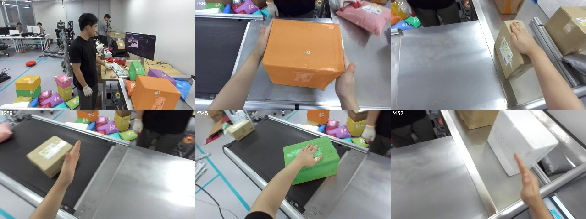
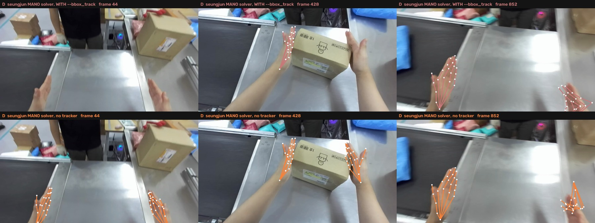
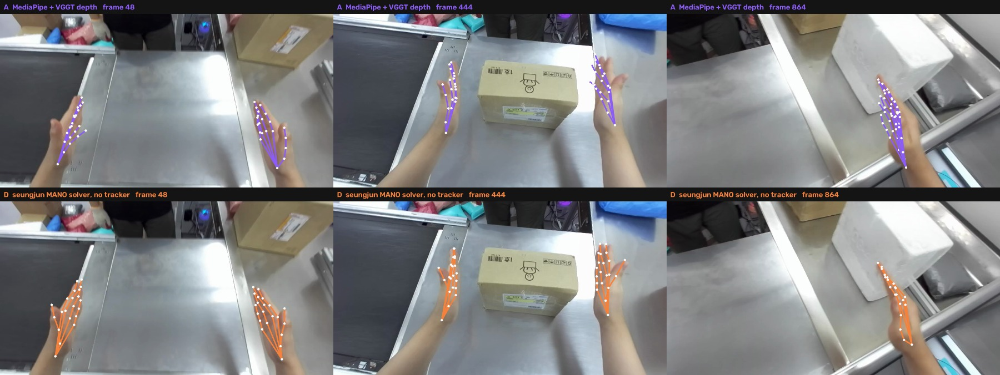

Frontier data, as it now looks
BMW & Frontier Demo · object points + hand points on the ego-stereo captures
Lab meeting
2026. 09. 07
Presented by beomjun
Overview
[TL;DR] Policy input, end to end, on his hands.
object on 217/217 frames · a hand on 95% · both hands on 88% · hands 21 metric keypoints each, in the ego-left camera frame
Every object, and the one being handled

package, finds every parcel in the scene — 4.36 instances per framethe caption burned into each frame prints the selected object's depth and how many candidates it beat
The hands his solver was throwing away

--bbox_track offhis tracker assumes a hand cannot jump between frames — true for a fixed rig, false for a head-mounted one. Kept hand-frames 38% → 77%, at the same 5.5 px triangulation error
His hands against the video-only ones

reprojected into the second eye — his 14.9 px, MediaPipe's 31.1 px; a hand that only fits the eye it was fitted to is wrong in depth
Hand and object in one metric frame
faint skeletons are held: carried where the hand last was while the head is turned away, never a fresh measurement · ep2 has no depth pass yet, so it shows hands only
Appendix · what produced each frame
- Object
- SAM3 keeps every instance of every prompt (
server/run_episode.sbatch), thenviz/object_select.pypicks the one nearest the ego camera by VGGT metric depth — IoU-0.55 merge across prompts, 5 cm continuity credit. Coverage 81/217 → 217/217 on ep0, 254/255 on ep1. - Hands
- seungjun's MANO-pipeline on the two eyes as a 2-view hoi session, left eye = world, baseline 66.4388 mm. Re-run without
--bbox_track(job 160289, 12 min): kept hand-frames 38/28/30% → 77/79/79%, per-side starvation gone (ep0 21.9/54.3 → 86.4/67.2), spans converge on 9.3/8.6 cm. Gated on his ownused/reproj_err, then held 1 s: both hands 42→88%, 59→90%, 50→92%. - Render
- viz/full_episode_viz.py (two-panel) · viz/hands3d_multi.py --append-turn (3D) · viz/overlay_sources.py (the two comparison strips) · viz/hold_hands.py (the hold) · caches viz/cache/<ep>_{objsel,hands_mano2_held}.npz
- Not shown
- ep2's object cloud (no depth pass) · episodes 3–79 · HaWoR and stereo hand sources · every chart and table: visualizations only, by request — numbers in the 09-03 record
- Previous records: hand source adjudicated · all objects, nearest one · policy rate & SAM 3D